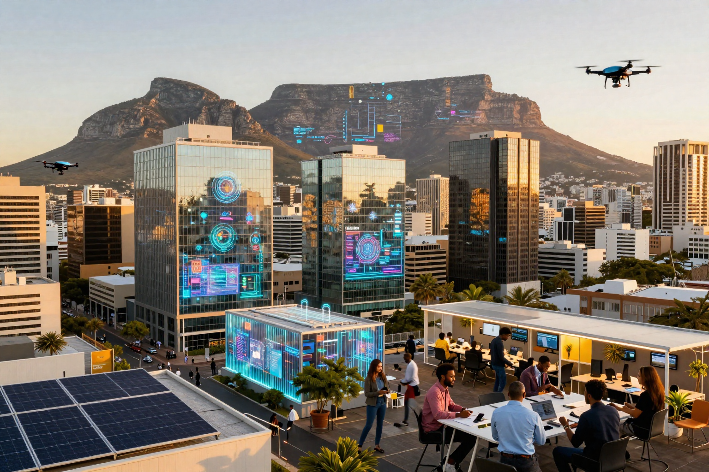

引言
非洲科技生態系統正在快速演進，而南非憑藉其成熟的金融市場、優越的基礎設施和豐富的人才儲備，正逐漸成為非洲大陸的科技創新中心。開普敦與約翰尼斯堡這兩大城市，憑藉各自的獨特優勢，正在形成互補的科技創業生態圈，有望成為非洲的「矽谷」。
根據 Partech Africa 2025 年的報告，南非在 2025 年以 6.43 億美元的股權融資總額和 85 筆交易，重新奪回非洲創投市場的領先地位，這是自 2017 年以來的首次。這一數據不僅反映了南非科技生態的活力，更揭示了其發展為非洲矽谷的巨大潛力。
南非科技生態現狀
創投數據亮點
南非的科技創業生態系統在 2025 年展現了強勁的成長動能。根據 StartupBlink 的全球創業生態系統指數，南非在全球排名維持第 52 位，持續領跑非洲區域。值得注意的是，南非在 2024 年獲得了 4.678 億美元的創業資金，2025 年更進一步成長。
關鍵數據
- • 股權融資總額：6.43 億美元（年增 41%）
- • 交易數量：85 筆（年增 27%）
- • 百大創業城市：約翰尼斯堡全球第 122 名，開普敦第 138 名
- • 最強產業：教育科技（EdTech）全球排名第 35
產業多元化發展
與非洲其他市場不同，南非的資金分布更為均衡。2024 年金融科技佔股權融資的 70%，但 2025 年呈現多元化趨勢。清潔能源科技年增 186%，成為新的投資熱點。SolarAfrica 獲得 9,800 萬美元用於 144MW 太陽能項目，凸顯能源轉型帶來的巨大商機。
開普敦 vs 約翰尼斯堡：雙城比較
約翰尼斯堡：成長最快的創業樞紐
約翰尼斯堡在 2025 年超越了開普敦，成為南非排名最高的創業城市。根據 StartupBlink 指數，約翰尼斯堡成長率超過 42%，全球排名上升 17 位至第 122 名。
約翰尼斯堡優勢
- 金融服務業中心，擁有成熟的商業基礎設施
- 約翰尼斯堡證券交易所（JSE）提供明確的退出路徑
- 大型企業客戶群，適合 B2B 創業項目
- 交通樞紐地位，連接非洲大陸市場
開普敦：產品設計與創新中心
開普敦雖然在排名上被約翰尼斯堡超越，但仍然是南非科技生態的重要支柱。其全球排名下降 10 位至第 138 名，但這更多反映了競爭加劇，而非競爭力下降。
開普敦優勢
- 產品設計和用戶體驗領先
- 匯聚 Naspers、Takealot、Aerobotics、Yoco 等知名企業
- 創意產業與科技融合，誕生多個國際級產品
- 生活品質高，吸引國際人才
兩城互補效應
開普敦與約翰尼斯堡的差距正在縮小——約翰尼斯堡的總分僅比開普敦高出 1.1 倍。這種競爭格局催生了良性互動：開普敦專注於產品創新和設計，約翰尼斯堡則提供商業化和規模化能力。兩城聯動，形成完整的創業價值鏈。
關鍵優勢分析
地理位置與時區優勢
南非位於非洲大陸南端，與歐洲時區相近，便於與西方市場溝通協作。開普敦和約翰尼斯堡都擁有國際機場，連接全球主要城市。這種地理優勢使南非成為進入非洲市場的理想門戶。
基礎設施完善
相較於拉各斯的間歇性電力問題，南非的基礎設施更為穩定。雖然「負載限制」（Load Shedding）仍是挑戰，但太陽能和儲能解決方案已廣泛應用於創業園區。光纖網絡覆蓋率高，共用工作空間充足，為創業團隊提供了良好的工作環境。
人才儲備豐富
南非擁有多所世界級大學，培養出優秀的工程師和設計師。開普敦在產品設計、UX 和全端開發方面表現突出；約翰尼斯堡則在金融科技和企業服務領域擁有豐富人才。根據調查，南非開發者的技術能力在非洲排名第一。
政策支持與監管環境
南非的監管沙盒為創業公司提供了更快的合規路徑。金融服務行為監管局（FSCA）的創新中心允許企業在受控環境下測試新產品。這種監管靈活性降低了創業門檻，吸引了更多國際資本。
主要挑戰
電力供應不穩定
「負載限制」是南非長期面臨的基礎設施挑戰。雖然 2025 年有所改善，但電力短缺仍影響創業公司的運營成本。許多科技公司投資於太陽能和備用電源，增加了初期成本。
安全問題
南非的犯罪率較高，影響企業運營和人才留任意願。科技公司需要額外投資於安保措施，這在一定程度上削弱了成本優勢。
人才外流
優秀的科技人才持續流向歐洲、北美和澳洲等發達市場。根據南非統計局數據，每年約有 2 萬名專業人士移民海外。這種「人才外流」對創業生態的長期發展構成威脅。
未來展望（3-5 年預測）
資本流入持續增長
南非在 2025 年的成功表明，股權驅動的創投模式在非洲具有可持續性。預計未來 3-5 年，南非將繼續吸引更多國際資本，尤其是在清潔能源、金融科技和農業科技領域。
產業多元化深化
2025 年的數據顯示，南非的創投資金不再集中於單一產業。清潔能源、保險科技（如 Naked Insurance 的 3,800 萬美元 B 輪融資）、農業科技（如 SwiftVEE 的 1,000 萬美元融資）都獲得了資金青睞。這種多元化趨勢將在未來幾年持續。
退出路徑更加清晰
2025 年 11 月，Optasia 在約翰尼斯堡證券交易所上市，籌資 3.45 億美元，市值達 14 億美元。這是自 2019 年 Jumia 和 Fawry 上市以來，非洲科技領域首個重大 IPO。這一里程碑為創業公司和投資者提供了明確的信號：在南非建立並上市是可行的策略。
區域樞紐地位強化
開普敦和約翰尼斯堡將繼續作為南部非洲的科技樞紐，與拉各斯（西非）和奈洛比（東非）形成三足鼎立之勢。每個樞紐專注於不同領域：拉各斯專注於消費金融科技和支付，奈洛比特長於行動優先服務和數據平台，開普敦和約翰尼斯堡則在企業級 SaaS、金融科技和創意科技方面具有優勢。
結論
開普敦和約翰尼斯堡具備成為非洲矽谷的關鍵要素：成熟的金融市場、完善的法律框架、豐富的人才儲備以及日益多元化的創業生態。南非在 2025 年重新奪回非洲創投市場領先地位，標誌著其科技生態系統進入新的成長階段。
雖然電力供應、安全和人才外流等挑戰依然存在，但南非的創業公司和投資者已展現出強大的適應能力和創新精神。隨著更多 IPO 退出案例的出現、產業多元化的深化以及區域合作的加強，開普敦和約翰尼斯堡有望在未來 3-5 年內，成為名副其實的非洲科技創新中心。
對於尋求進入非洲市場的投資者和創業公司而言，南非提供了一個相對成熟、風險可控且機會豐富的選擇。開普敦的產品創新能力加上約翰尼斯堡的商業化實力，這種雙城協作模式，正是非洲矽谷崛起的最佳示範。
常見問答
參考資料
- • Partech Africa 2025 Report
- • StartupBlink Global Startup Ecosystem Index 2025
- • 南非統計局人才流動數據
- • JSE（約翰尼斯堡證券交易所）公開資料